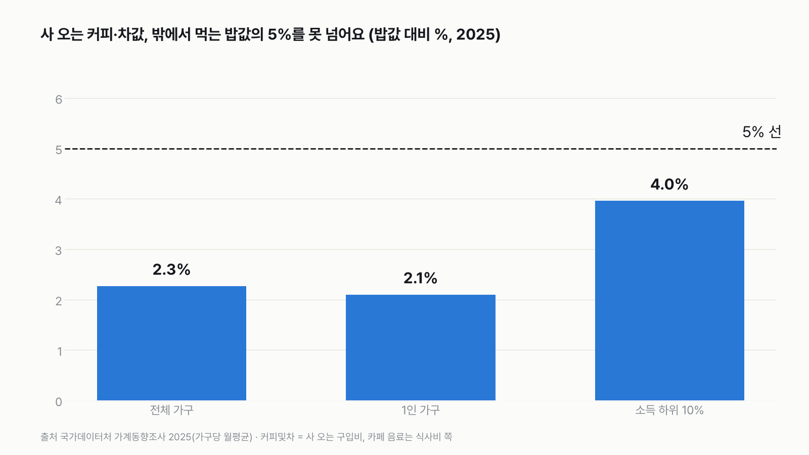
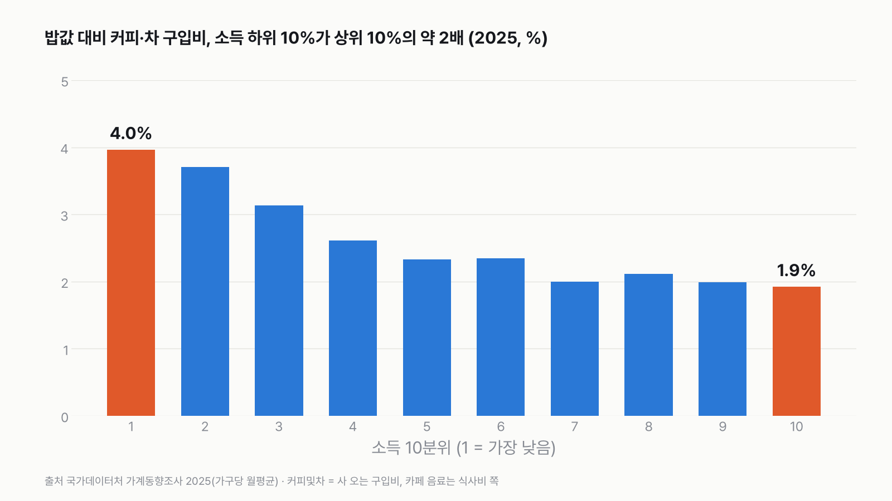
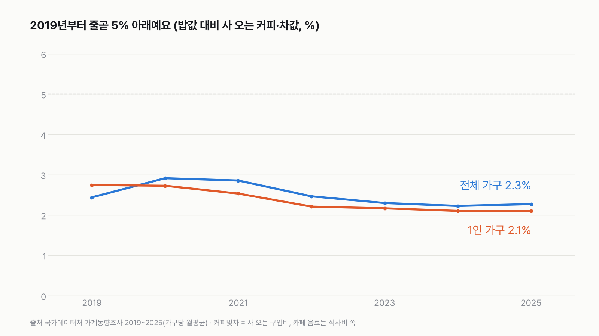

실험맨, 사 온 커피값이 밖에서 먹는 밥값의 5%를 넘을까?
'커피값이 아깝다'는 말은 흔하지만, 사 오는 커피만 떼어 보면 밥값에 견줘 얼마나 될까요? 5%를 넘을지 먼저 골라 주세요.
독자 투표
3줄 요약
- 마트·편의점에서 사 오는 커피·차값이 밖에서 사 먹는 밥값의 5%를 넘을지 물어요.
- 국가데이터처 가계동향조사 2025년 값으로 전체 가구, 1인 가구, 소득 하위 10% 가구를 세 번 확인해요.
- 카페에서 사 마신 커피는 '커피·차'가 아니라 밥값 쪽에 들어 있어요. 그래서 이 글의 커피값은 '사 온' 커피예요.
조건과 규칙
- 사 온 커피값: 가계동향조사의 '커피및차' 항목이에요. 마트·편의점 등에서 사 오는 커피(원두·믹스·병/캔 커피 등)와 차 구입비예요.
- 밖에서 먹는 밥값: '식사비' 항목이에요. 식당·배달·카페에서 사 먹은 음식과 음료가 여기 들어가요. 카페 커피도 여기 들어 있어요.
- 비율: 사 온 커피값 ÷ 밥값 × 100이에요. 같은 표, 같은 해, 같은 집단끼리만 나눠요.
- 세 번 확인: 2025년 전체 가구, 1인 가구, 소득 하위 10%(1분위) 가구예요.
- 판정: 5% 이상이면 '넘는다', 아니면 '못 넘는다'예요. 4.5~5.5%는 '아슬아슬'로 표시만 해요. 기준선은 숫자를 보기 전에 정했어요.
결과 요약
세 번 모두 '못 넘는다' → 사 온 커피값은 밥값의 2~4%예요
- 전체 가구 2.27%예요. 한 달 밥값 45만 5,320원에 사 온 커피·차값은 1만 344원이에요.
- 1인 가구 2.10%예요. 밥값 30만 6,367원에 커피·차 6,425원이에요.
- 소득 하위 10% 가구 3.96%로 5%에 가장 가까웠지만 넘지 못했어요. '아슬아슬'(4.5% 이상)에도 들지 않아요.
그래서? 사 오는 커피는 밥값에 견주면 작은 돈이에요. 다만 소득이 낮은 가구일수록 밥값 대비 비율이 높아서, 하위 10%는 상위 10%의 약 2배예요. 왜 그런지는 이 표로 알 수 없어요.
독자 예상 vs 데이터 결과
실험맨, 사 온 커피값이 밖에서 먹는 밥값의 5%를 넘을까?
데이터로 보면 못 넘는다. 2025년 사 온 커피·차값은 밥값의 전체 가구 2.27%, 1인 가구 2.10%, 소득 하위 10% 3.96%로 세 번 모두 5%를 못 넘어요. 카페 커피는 밥값 쪽에 들어 있어요.


| 확인 | 사 온 커피·차 (월) | 밖에서 먹는 밥값 (월) | 비율 | 5% 넘나 |
|---|---|---|---|---|
| 1. 전체 가구 | 10,344원 | 455,320원 | 2.27% | 못 넘는다 |
| 2. 1인 가구 | 6,425원 | 306,367원 | 2.10% | 못 넘는다 |
| 3. 소득 하위 10% | 6,059원 | 152,909원 | 3.96% | 못 넘는다 |
| 최종 | 세 번 모두 못 넘는다 |
1. 전체 가구: 2.27%
2025년 가구당 한 달 평균, 밖에서 사 먹는 밥값은 45만 5,320원이에요. 사 오는 커피·차값은 1만 344원이에요. 밥값 100원마다 커피·차에 2원 남짓이에요. 5%의 절반에도 못 미쳐요.
2. 1인 가구: 2.10%
혼자 사는 가구는 밥값 30만 6,367원, 커피·차 6,425원이에요. 비율은 2.10%로 세 번 중 가장 낮아요. 1인 가구라 이 값은 한 사람이 쓴 돈과 같아요.
3. 소득 하위 10%: 3.96%
소득이 가장 낮은 10% 가구는 밥값 15만 2,909원, 커피·차 6,059원이에요. 3.96%로 세 번 중 5%에 가장 가까워요. 그래도 5%와는 1 넘게 차이 나서 '아슬아슬'(4.5% 이상)에도 들지 않았어요.
소득 10분위로 늘어놓으면
2025년 소득 10분위별로 보면 1분위 3.96%, 2분위 3.70%, 3분위 3.13%에서 내려가 10분위는 1.92%예요. 하위 10%가 상위 10%의 2.06배예요. 상위 10% 가구는 커피·차에 1만 5,482원을 써서 금액은 더 많지만, 밥값이 80만 6,201원이라 비율은 낮아요.


2019년부터 줄곧 5% 아래
전체 가구는 2019년 2.44%에서 2025년 2.27%, 1인 가구는 2.75%에서 2.10%가 됐어요. 2019년에도 둘 다 5%와는 거리가 있었어요. 같은 기간 전체 가구 밥값은 34만 2,689원에서 45만 5,320원으로, 커피·차값은 8,361원에서 1만 344원으로 늘었어요.


하위 10%는 한때 5% 안팎이었어요
소득 하위 10% 가구는 2019년 5.14%, 2020년 5.71%, 2022년 5.01%로 5%를 넘은 해가 있었어요. 2023년 4.30%, 2024년 4.16%, 2025년 3.96%로 내려왔어요. 같은 기간 이 가구의 커피·차값은 4,779원에서 6,059원으로 늘었고, 밥값은 9만 2,975원에서 15만 2,909원으로 더 많이 늘었어요(계산 뒤 더함).
숫자를 다시 보며
이 글은 '커피값을 아끼라'는 이야기가 아니에요. 카페에서 마신 커피는 밥값 쪽에 섞여 있어서 따로 뗄 수 없어요. 그래서 '커피 전체에 쓰는 돈'은 이 표로 알 수 없어요. 여기서 본 건 사 오는 커피·차만이에요. 오늘 커피, 사 왔나요, 사 마셨나요?
이 숫자는 어디서 왔나요
출처
어떻게 셌나요
- 자료: 국가데이터처 「가계동향조사」 가구당 월평균 가계수지(전국, 1인 이상), 2019~2025년 연간.
- 사 온 커피값: '식료품·비주류음료' 아래 '커피및차'(I8). 카페 음료는 들어 있지 않아요.
- 밥값: '음식·숙박' 아래 '식사비'(T1). 식당·배달·카페 음식과 음료가 들어 있어요.
- 비율: 같은 표·같은 해·같은 집단의 커피및차 ÷ 식사비 × 100.
- 판정: 5% 이상이면 '넘는다'. 숫자를 보기 전에 정했어요. 기준선을 10%로 바꿔도 세 번 모두 못 넘어요.
| 항목 | 값 | 잰 것 / 가정 |
|---|---|---|
| 전체 가구 2025 (커피·차 / 밥값) | 10,344원 / 455,320원 → 2.27% | 잰 것(가구원수별 표) |
| 1인 가구 2025 | 6,425원 / 306,367원 → 2.10% | 잰 것(가구원수별 표) |
| 소득 하위 10% 2025 | 6,059원 / 152,909원 → 3.96% | 잰 것(소득10분위별 표) |
| 소득 상위 10% 2025 | 15,482원 / 806,201원 → 1.92% | 잰 것(소득10분위별 표) |
| 기준선 | 5% (민감도 10%) | 가정(값 보기 전에 정함) |
한계 5가지
이 데이터로 말할 수 없는 것
- 가구 단위 값이에요. 1인 가구가 아닌 집단은 '가구당'이지 '한 사람당'이 아니에요.
- 카페 커피는 밥값(식사비)에 섞여 있어서, 커피에 쓰는 돈 전체는 알 수 없어요.
- 전체 가구 평균은 표마다 조금 달라요(가구원수별 2.27%, 소득10분위별 2.32%). 판정은 전제에서 정한 대로 가구원수별 표를 썼어요.
- 소득 하위 10%는 표본이 적어 해마다 값이 흔들릴 수 있어요.
- 왜 소득에 따라 비율이 다른지는 이 표에 없어요.
다음 대결
대결 다 보기
판다 vs 실험맨
판다 vs 실험맨, 다섯 판 승부로 하루에 '더 많이 먹는' 쪽은?
A판다vsB실험맨
투표하러 가기

1년 밥값 vs 최신 스마트폰
실험맨이 1년 동안 사 먹는 밥값(배달 포함)으로 최신 스마트폰을 살 수 있을까?
A산다vsB못 산다
투표하러 가기

20대 vs 우리 할아버지
20대 여성 실험맨 vs 65세 이상 남성 실험맨, 네 판 승부로 하루 운동을 더 많이 하는 쪽은?
A20대 여성vsB65세 이상 남성
투표하러 가기

출퇴근 vs 연차
실험맨이 1년 동안 출퇴근에 쓰는 시간과 연차 휴가로 쉬는 시간, 세 판 승부로 더 긴 쪽은?
A출퇴근vsB연차 휴가
투표하러 가기

1년 쓰는 물 vs 레인 한 줄
실험맨 혼자 1년 쓴 수돗물로 25m 수영장 레인 한 줄을 채울 수 있을까?
A채운다vsB못 채운다
투표하러 가기

실험맨 vs 고양이 그루밍
실험맨 vs 고양이, 세 판 승부로 하루 씻고 꾸미는 시간이 더 긴 쪽은 누굴까?
A실험맨vsB고양이
투표하러 가기

고3 vs 기린
고3 실험맨과 기린, 하루에 누가 더 적게 잘까?
A고3vsB기린
투표하러 가기

60세 이상 vs 20대
60세 이상 여성 실험맨과 20대 여성 실험맨, 하루 사람을 만나 어울리는 시간은 누가 더 길까?
A60세 이상 여성vsB20대 여성
투표하러 가기
새 글 나오면 받아 보기
피드 리더 앱에 이 사이트 주소를 한 번 넣어 두면, 새 글이 올라올 때 앱에 떠요. 가입이나 메일 주소는 필요 없어요.
받는 법 보기
- 피드 리더 앱을 하나 골라요. 새 글을 모아 보여 주는 앱이에요. 예를 들면 Feedly나 Inoreader가 있어요. 둘 다 무료고 웹·휴대폰에서 써요.
- 앱에서 '구독 추가'(+)를 누르고 아래 주소를 붙여 넣어요.
- 끝이에요. 새 글이 올라오면 앱 목록에 떠요.
https://protofu.github.io/opendata-insight/feed.xmlFeedly를 쓴다면 여기를 눌러 바로 추가할 수도 있어요.